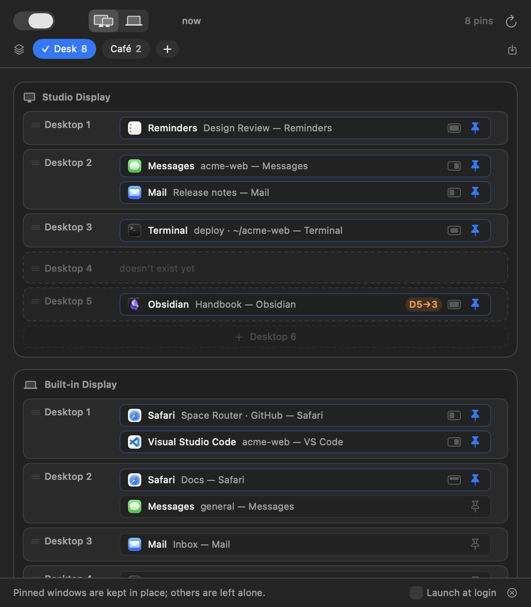
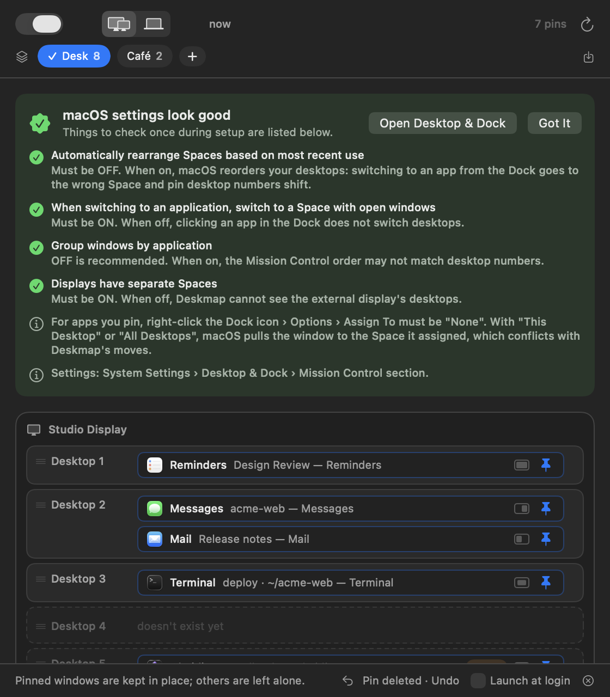
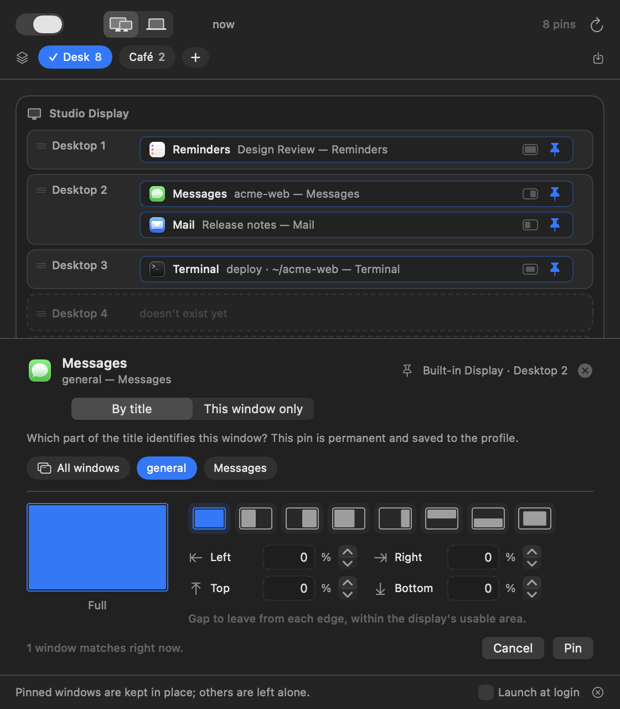
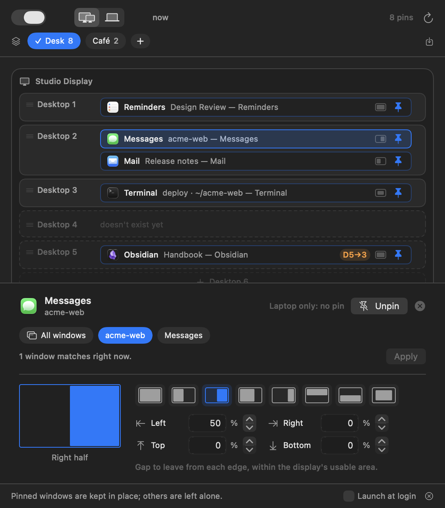
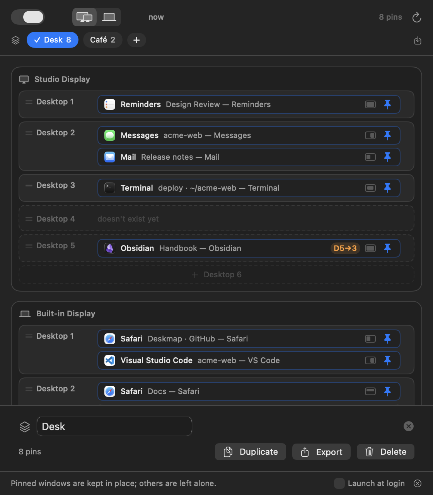

Step 01Install and give permission
- Copy Deskmap.app to your Applications folder and open it. It has no Dock icon; it lives in the menu bar.
- Click the menu bar icon. The first card says Accessibility permission required — click Grant Access.
- macOS opens System Settings › Privacy & Security › Accessibility. Turn the app on.
- Back in the app, turn on Launch at login in the footer.
That permission is how it reads window titles and moves windows — the only one it asks for. No network, no files of yours, no window contents.

Step 02Fix four macOS settings, once
The app checks these live and keeps an orange card up until they are right. The card has an Open Desktop & Dock button.
| Setting (Desktop & Dock › Mission Control) | Must be |
|---|---|
| Automatically rearrange Spaces based on most recent use | Off |
| When switching to an application, switch to a Space with open windows | On |
| Displays have separate Spaces | On |
| Group windows by application | Off (recommended) |
One more that no app is allowed to check: for every app you pin, right-click its Dock icon › Options › Assign To → None. If macOS has assigned the app to a desktop itself, the two will fight over the window.

Step 03Pin your first window
Open the window you care about — say a project in VS Code — then click the menu bar icon and find its row on the map. Click the row's pin button; a panel opens at the bottom.

For acme-web — VS Code, pick acme-web: the project name, not the file name, not the app name. Under the parts the panel says how many open windows match right now — your check that you picked the right one. Then click Pin.
A pin is a promise about a title: every window of that app whose title contains that part belongs here. Tomorrow's window, next week's, the one after a restart.
Two variants in the same panel: All windows pins every window of the app whatever the title (good for Mail or Slack), and This window only pins one specific window for apps whose windows all look alike — it lasts until that window closes and is not saved.
Step 04Move it where it belongs
Drag the row — or its chip — onto another desktop row, on any display. That is how you say “no, this one lives on the monitor, desktop 3”.
- Desktops that don't exist yet are drawn dashed. Only you can create desktops: open Mission Control and add them.
- D5→3 means the pin wants desktop 5 but the display has three, so the window went to the last one.
- Dragging an unpinned row moves that window once and saves nothing.
Step 05Give it a size
Click a pinned row or chip and pick a layout: Full, Left half, Right half, Left 70% / Right 30%, Top half, Bottom half or Center. The default is “wherever the window is now”, and you can set a gap to leave from the edges.

It won't keep snapping the window back. Press ⌘R (or the ↻ button) when you want everything placed again from scratch.
Step 06Two setups: with monitor, without
Your windows can't live on desktop 3 of a monitor that isn't plugged in. So every pin has two targets, and the buttons at the top (⌘1 / ⌘2) switch between them: Monitor connected and Laptop only.
Set one up, switch, set up the other. Plug the monitor in or pull it out and everything is placed again for that setup. A pin you don't want in one setup: drag it to the dashed tray at the bottom — it stays in the other one.
Step 07Profiles: desk, café, presentation
A profile is a whole set of pins with a name. The chips under the toolbar switch between them instantly.

Export writes a .deskmap.json file — how you carry a setup to another Mac, or hand it to someone else.
Step 08When you change your mind
Undo: after unpinning, dragging a pin or reordering desktops, the footer shows “Pin removed · Undo” for ten seconds. Click it or press ⌘Z. There are no confirmation dialogs anywhere in the app; this is why.
Pause: the switch at the top left. Nothing is moved while it is off and the menu bar icon shows a pause sign. It survives restarts — so if the app ever seems asleep, look there first.
Step 09One-key setups
Deskmap answers deskmap:// links, so anything that can open a URL can drive it.
open "deskmap://profile/Café" # switch profile
open "deskmap://reapply" # place everything now
open "deskmap://toggle" # pause / resumePut one in a Shortcut and give it a keyboard shortcut, or trigger it from a Focus automation: when Work Focus turns on, switch to the Desk profile.
Step 10If nothing happens
| What you see | What it means |
|---|---|
| The window doesn't move at all | Routing is paused (top left), or the Accessibility permission was lost after an update — grant it again. |
| It lands on the wrong desktop | “Automatically rearrange Spaces” is on, or the app's Dock Assign To isn't None. |
| A pin's chip looks faded | A more specific pin matches that window first. Hover the chip to see which one. |
| Sizes work, desktops don't | This macOS version didn't expose the private calls used for moving windows between desktops. Displays and layouts still work. |
Longer troubleshooting, the exact matching rules and the data formats are in the project README.